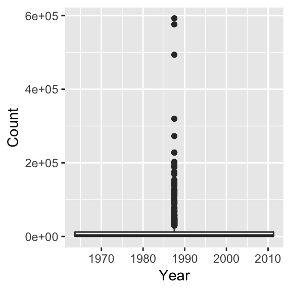

DS 202: Working with factor variables
Yumou Qiu
Factors
- A special type of variable to indicate categories
- both labels and their order (i.e. numbers)
- By default text variables are stored in factors during input
- numeric categorical variables have to be converted to factors manually
factor creates a new factor with specified labels
Your Turn

- Inspect the
fbi object. How many variables are there? Which type does each of the variables have?
- Make a summary of Year
- Make Year a factor variable:
fbi$Year <- factor(fbi$Year)
- Compare summary of Year to the previous result
- Are there other variables that should be factors (or vice versa)?
Note: factors in boxplots
boxplots in ggplot2 only work properly if the x variable is a character variable or a factor:
twoyear <- dplyr::filter(fbi, Year %in% c(1961, 2014))
ggplot(data = twoyear, aes(x = Year, y = Count)) + geom_boxplot()

ggplot(data = twoyear, aes(x = factor(Year), y = Count)) + geom_boxplot()

Data types: checking and casting
Checking for, and casting between types:
str, mode provide info on typeis.XXX (with XXX either factor, int, numeric, logical, character, ... ) checks for specific typeas.XXX casts to specific type
Casting between types
 Note:
Note: as.numeric applied to a factor retrieves order of labels, not labels, even if those could be interpreted as numbers.
To get the labels of a factor as numbers, first cast to character and then to a number.
Levels of factor variables
levels(x) shows us the levels of factor variable x in their current order- factor variables often have to be re-ordered for ease of comparisons
- We can specify the order of the levels by explicitly listing them, see
help(factor)
- We can make the order of the levels in one variable dependent on the summary statistic of another variable
Reordering factor levels - manual
## NULL
manually (extremely sensitive to typos):
levels(factor(fbi$Type, levels=c("Larceny.theft", "Burglary", "Motor.vehicle.theft", "Aggravated.assault", "Robbery", "Legacy.rape", "Murder.and.nonnegligent.Manslaughter", "Rape")))
## [1] "Larceny.theft"
## [2] "Burglary"
## [3] "Motor.vehicle.theft"
## [4] "Aggravated.assault"
## [5] "Robbery"
## [6] "Legacy.rape"
## [7] "Murder.and.nonnegligent.Manslaughter"
## [8] "Rape"
What will happen if there are typos?
temp = factor(fbi$Type, levels=c("Larceny.theft", "Burglary", "Motor.vehicle.theft", "Aggravated.assault", "Robbery", "Legacy.rape", "murder.and.nonnegligent.Manslaughter", "Rape"))
levels(temp)
## [1] "Larceny.theft"
## [2] "Burglary"
## [3] "Motor.vehicle.theft"
## [4] "Aggravated.assault"
## [5] "Robbery"
## [6] "Legacy.rape"
## [7] "murder.and.nonnegligent.Manslaughter"
## [8] "Rape"
## [1] <NA> Legacy.rape Rape
## [4] Robbery Aggravated.assault Burglary
## [7] Larceny.theft Motor.vehicle.theft
## 8 Levels: Larceny.theft Burglary ... Rape
Reordering factor levels - using another variable
reorder(factor, numbers, function)
reorder levels in factor by values in numbers. Use function to summarise (average is used by default).
levels(reorder(fbi$Type, fbi$Count, na.rm=TRUE))
## [1] "Murder.and.nonnegligent.Manslaughter"
## [2] "Legacy.rape"
## [3] "Rape"
## [4] "Robbery"
## [5] "Aggravated.assault"
## [6] "Motor.vehicle.theft"
## [7] "Burglary"
## [8] "Larceny.theft"
missing values in numbers? make sure to use parameter na.rm=TRUE!
Your turn
For this your turn use the fbi object from the classdata package.
- Introduce a rate of the number of reported offenses by population into the
fbi data. You could use the Ames standard to make values comparable to a city of the size of Ames (population ~70,000).
- Plot boxplots of crime rates by different types of crime. How can you make axis text legible?
- Reorder the boxplots of crime rates, such that the boxplots are ordered by their medians.
- For one type of crime (
subset or filter) plot boxplots of rates by state, reorder boxplots by median crime rates
Changing Levels’ names
fbi$Type = factor(fbi$Type)
levels(fbi$Type)
## [1] "Aggravated.assault"
## [2] "Burglary"
## [3] "Larceny.theft"
## [4] "Legacy.rape"
## [5] "Motor.vehicle.theft"
## [6] "Murder.and.nonnegligent.Manslaughter"
## [7] "Rape"
## [8] "Robbery"
levels(fbi$Type)[6] = "Murder"
levels(fbi$Type)
## [1] "Aggravated.assault" "Burglary" "Larceny.theft"
## [4] "Legacy.rape" "Motor.vehicle.theft" "Murder"
## [7] "Rape" "Robbery"